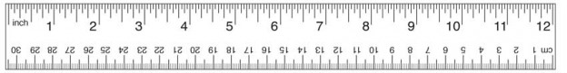
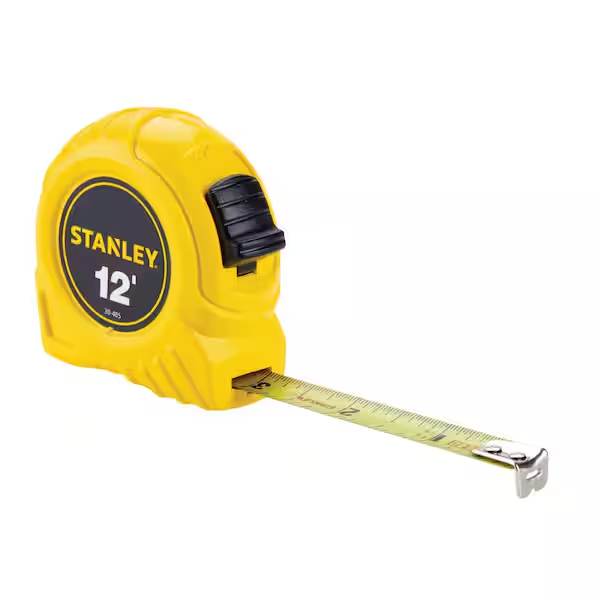
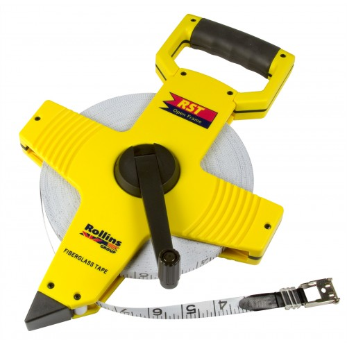
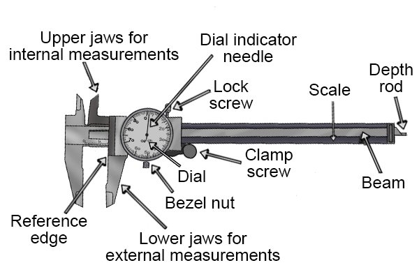
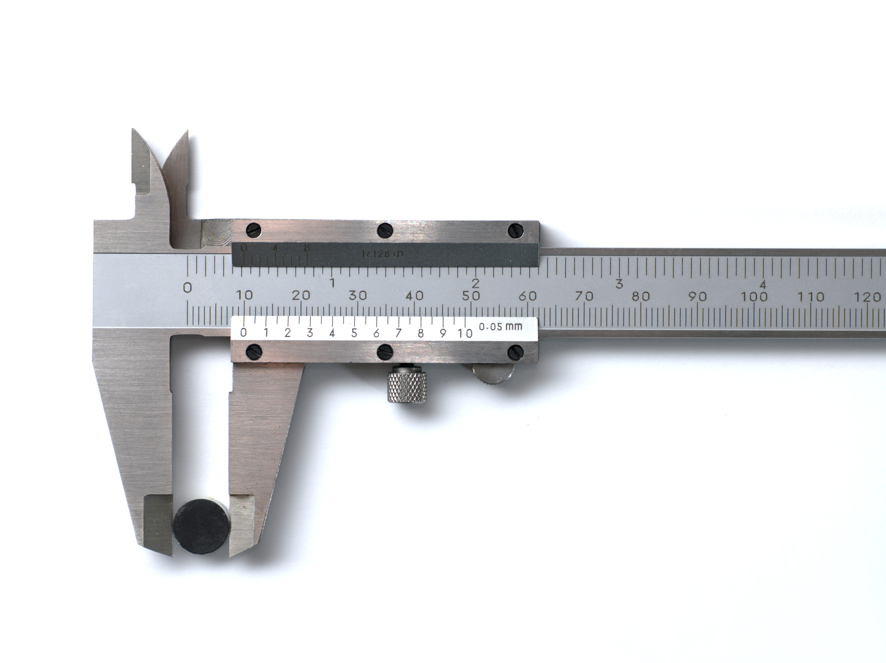
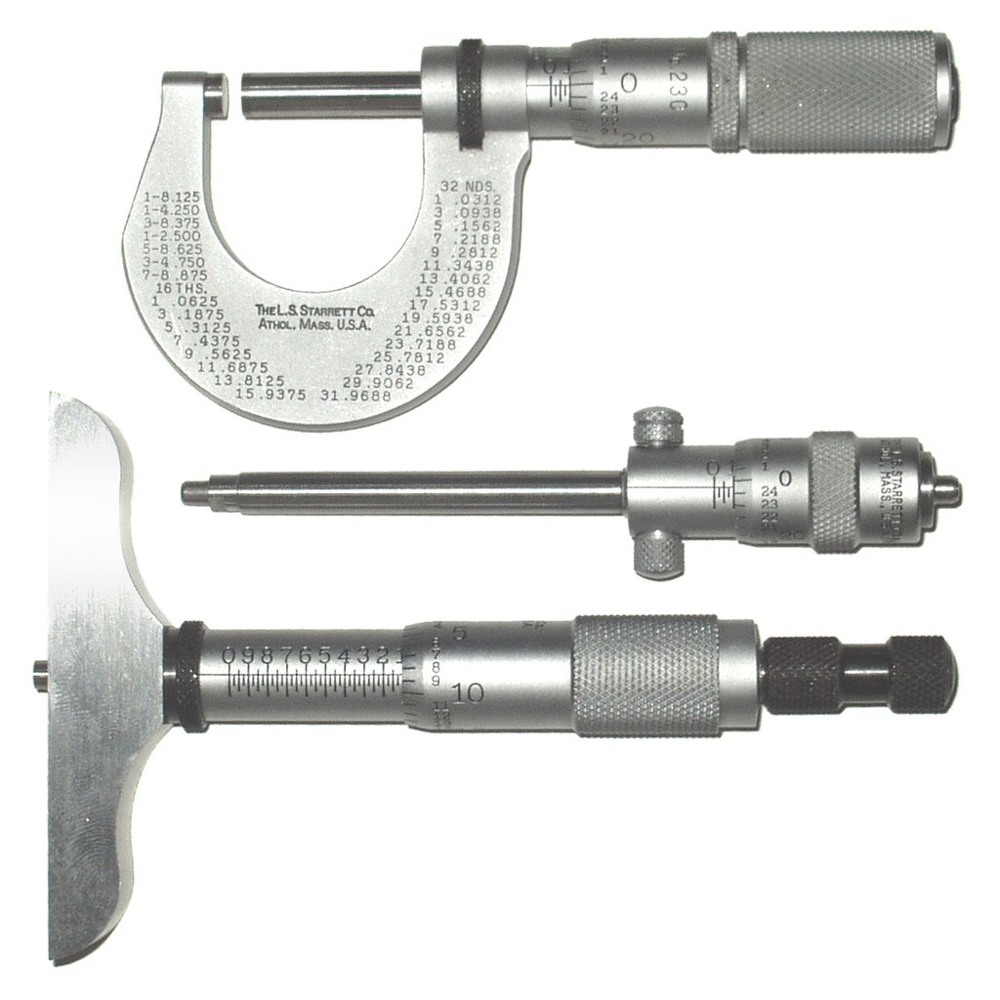
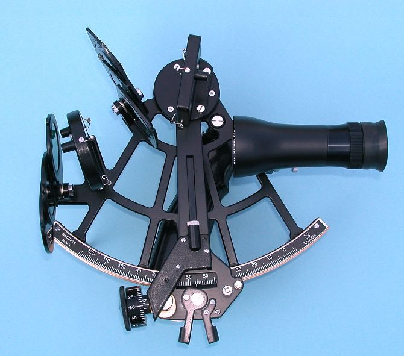
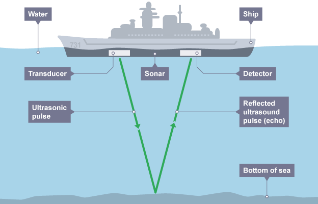

Subsubsection Length Measuring Instruments
Rulers and Yardsticks are straight, flat measuring tools commonly used for shorter lengths. A ruler measure 1 ft. or 12 inches whereas a yardstick measure 3 ft. or 1 yd. A Tape Measure is a flexible tape marked with inches and feet for measuring longer distances. It is often used in construction and carpentry. A surveyor’s tape is a long, flexible tape marked in meters used in land surveying.



Calipers are used to measure the dimensions of an object, generally by placing two movable points of the instrument across the object or span to be measured. Calipers use a Vernier scale to increase measuring accuracy.


A micrometer, sometimes known as a micrometer screw gauge, is a device incorporating a calibrated screw widely used for accurate measurement of components. Outside, inside, and depth micrometers are all used. The outside micrometer has a unit conversion chart between fractional and decimal inch measurements etched onto the frame

A Surveyor’s Wheel, also known as a "measuring wheel" or "click wheel," surveyor’s wheels are used to measure longer distances, such as those encountered in land surveying. They are often used for irregularly shaped areas.

A sextant is a navigation instrument used to determine a ship’s position at sea. With the ship’s position accurately known, the distance to the destination can be measured on a nautical chart..

Laser measuring tools send a beam to the target, which reflects off the surface and is sent back to the device. Lasers are focused beams of light that stay at a particular frequency. And because they travel from one place to another at a fairly constant rate, they can be used to measure distance with a great deal of accuracy. A laser measuring device also has a longer range than many other measuring tools, which gives it an advantage over other devices that become less precise the farther out you measure. Lasers are less likely to disperse than white light, so they can travel at a greater distance without losing their intensity. They keep most of their intensity once they reflect off a target, which is important if you want to get accurate distance measurements.

Sonar is an object-finding system that uses sound waves to determine the distance, speed of and direction to objects within its range.
